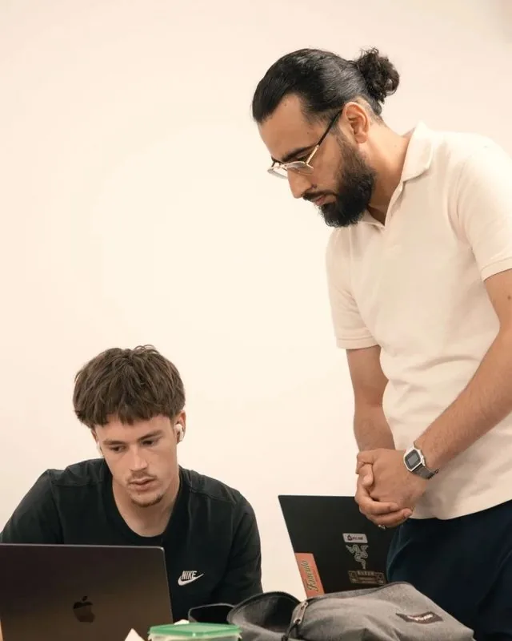
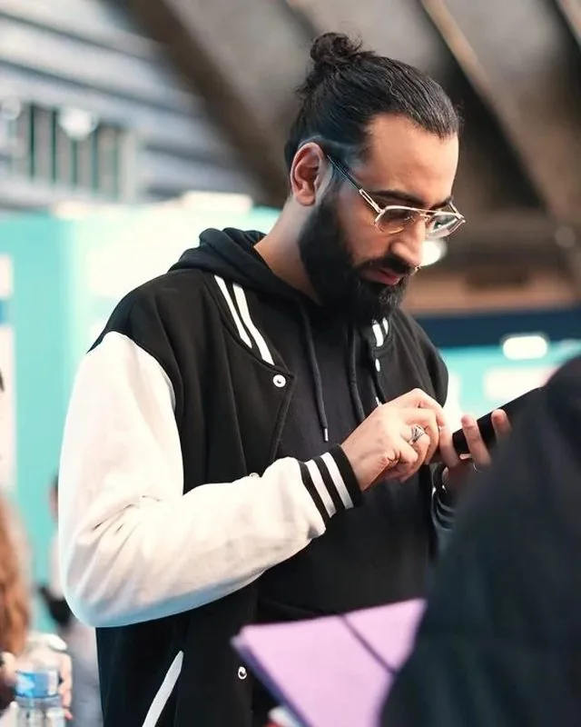

Ouvert aux opportunités
Firas Bouricha Ingénieur Cloud & Infrastructure
Je conçois, j'automatise et je sécurise des infrastructures : virtualisation Proxmox, Infrastructure as Code, pipelines CI/CD durcis. Je souhaite mettre ces compétences au service d'une équipe.



1/4Portrait professionnel
~explorer